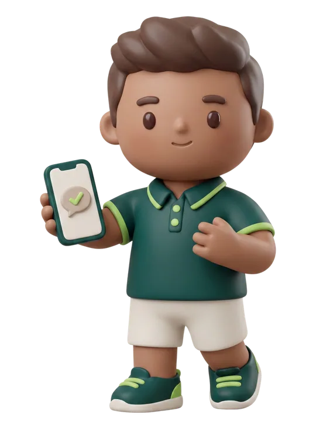

Captación y recepciónHugo
Que ninguna llamada ni consulta se quede sin respuesta, a cualquier hora.
98%
de las consultas respondidas al momento este mes
Te entrega: primeras visitas agendadas, listas en tu agenda.
Ver la ficha de Hugo (en este prototipo se muestra la de Leo como ejemplo)